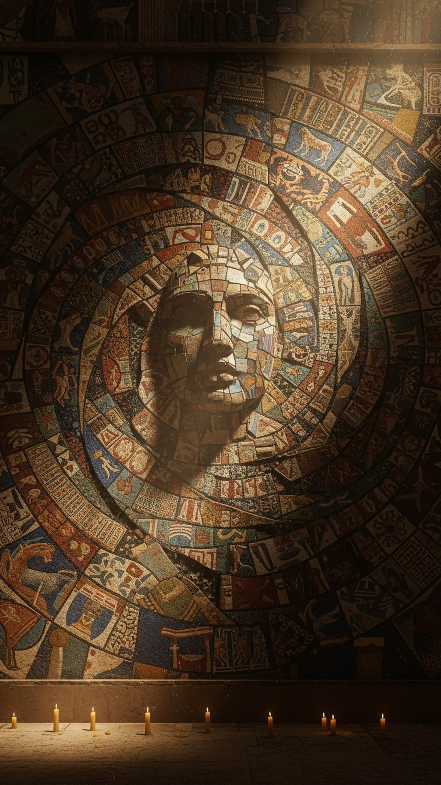

Every core miracle in the Gospels was already being worshipped somewhere in the ancient world before Bethlehem. Virgin birth. Death and resurrection. Rising on the third day. A sacred meal of flesh and blood that grants eternal life. Ascension into heaven. Not one of these motifs appears for the first time in the first century. Every single one is older.
That is not a fringe claim. It is the starting observation of one of the most famous works of comparative religion ever written, and it was conceded, in part, by the early Church itself. This is part 1 of THE BLUEPRINT, a 23-part investigation into the figures who carried pieces of the story before the story was told.

The pattern in the catalogue
In 1890, the Scottish anthropologist James Frazer published The Golden Bough, a sprawling catalogue of ancient ritual and myth. Running through it is a figure Frazer found in culture after culture: the dying and rising god. Osiris in Egypt. Tammuz in Sumer. Adonis in Phoenicia. Attis in Phrygia. Dionysus in Greece. A god dies, often violently, often in spring. The god returns. The worshippers share in the return, sometimes through a meal, sometimes through initiation, always with the promise that death is not the end.
The template predates the first century not by decades but by millennia. The Pyramid Texts narrating the death and resurrection of Osiris were carved around 2400 BC. The Descent of Inanna, with its three days of death and third-day revival, was pressed into clay around 1900 BC. Whatever you make of the parallels, the chronology is not in dispute.
Even the skeptics of the theory concede the core
The copycat thesis has serious academic critics, and it is worth being honest about that. The Swedish scholar Tryggve Mettinger wrote The Riddle of Resurrection in 2001 specifically to push back on sloppy versions of the dying-and-rising-god category. And yet, arguing against the parallels, Mettinger still concedes that Ugaritic Baal, Melqart, Adonis and Tammuz died and rose in the religions of the Levant centuries before Jesus. The strongest opponent of the theory grants the existence of the pattern. The argument is about degree, not existence.
A second-century Church Father, confronted with the parallels, did not deny them. He said demons copied Christianity in advance.
The confession from inside the church
The strangest receipt in this entire investigation comes from inside Christianity. Justin Martyr, one of the earliest Church Fathers, wrote his First Apology around 150 AD. In chapter 66 he addresses the sacred meal of the cult of Mithras: bread and a cup of water and wine, consumed by initiates, exactly parallel to the Eucharist. Justin does not say the pagans are lying. He does not say the ritual does not exist. He says the wicked demons imitated the Christian sacrament in advance, to confuse people.
Sit with that. A second-century Christian, writing to the Roman emperor, admits the parallel is real and reaches for retroactive demonic plagiarism to explain it. Tertullian did the same fifty years later with Mithraic baptism. The parallels were not invented by nineteenth-century skeptics. They were being argued about while the New Testament was still being copied by hand.
How this investigation works
Over 23 parts we examine 22 figures and ritual patterns, one at a time. The rules are strict, because this topic is drowning in fabrications. Every claim gets a source and a date. Every figure gets a credibility tier: text-verified, where the texts demonstrably predate Christianity; historically plausible, where the traditions are parallel but transmission is debated; and internet-amplified, where a real parallel has been inflated by viral falsehoods. When the popular version of a parallel is fake, we will say so. Krishna was not crucified. Horus did not have twelve disciples. We will kill the fake claims and keep what the sources actually say, because the real pattern does not need the fake one.
We are investigators here, not prosecutors. The question is not whether Jesus existed. The question is how many earlier templates fed the story the Gospels tell.
By the time Paul reached Rome, the city already held temples to Cybele, Isis, Mithras and Asclepius, every one of them offering a dying or rising or healing savior. Christianity did not emerge into an empty room. It emerged into a crowded one.
If twenty-two earlier figures share his story, which one did they start with? That is the question this series exists to answer. Follow the parts as they publish, and decide for yourself which pieces matter.
This is Part 1 of 23 in THE BLUEPRINT, an investigation into the pre-Christian figures who carried the pieces of the Jesus story. See every part of the series here.
Before you go
7 books the Vatican doesn't want you reading. Free PDF — the texts they cut, with sources. Joined by 140+ Inner Circle members.
No spam. Unsubscribe anytime.
Go deeper
The Hidden Canon, Vol. I — Enoch. Jubilees. Thomas. Mary. Judas. 90 pages, 14 chapters, every receipt cited. The books your Bible quietly removed.
Read the Canon →Books that informed this investigation
As an Amazon Associate, Hidden Epoch earns from qualifying purchases. Cost to you: nothing.
Research safely
The VPN we use to research without being tracked. First 3 months free.
Get NordVPN →